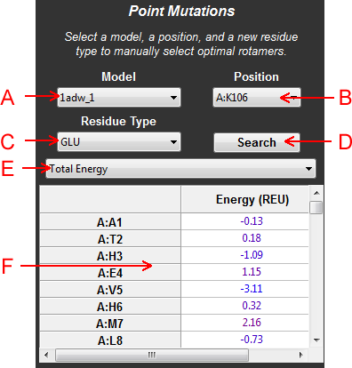
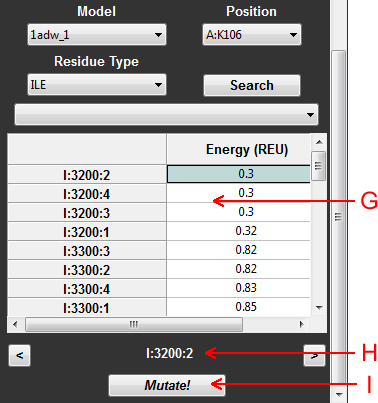

Abstract: The point mutations panel is designed to simplify the process of manually designing a protein one residue at a time. The user can easily mutate individual amino acids to new amino acid types and explore the rotamers available for these amino acids in the Dunbrack rotamer library provided by Rosetta.

Figure 1: Schematic of the point mutations panel before searching rotamers
A: Model - Specify the model onto which the point mutation will be made. Specifying a model causes the current scores of all residues on this model to be calculated.
B: Residue Position - Specify the position that will be mutated.
C: Residue Type - New amino acid type to mutate onto the sequence.
D: Search Rotamers - Search all the rotamers for the indicated residue type at the selected position.
E: Scoretype Menu - Specify the scoretype by which to color residues.
F: Residue Energies - A table showing the per residue scores colored by score (blue is the lowest score, red is the highest). This table is clickable to easily select new residue positions.

Figure 2: Schematic of the point mutation panel after searching rotamers.
G: Rotamer Energies - A table showing the per rotamer scores for the selected residue type, colored by score (blue is the lowest score, red is the highest). Rotamers are sorted according to increasing score. This table is clickable to easily view what the rotamer would look like in PyMOL.
H: Current Rotamer - The rotamer that is currently displayed in PyMOL. Click on the arrow buttons to navigate the table, or click directly on the table to change rotamers.
I: Mutate Button - Click this button to confirm the selection of mutated rotamer, which will then update the PyMOL structure and the sequence.